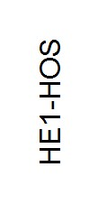
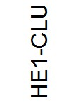
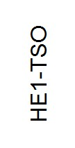

| Servicios ofertados por el Hospital de Especialidades N°.1 | ||||||||
| CODIGO_SERVICIO | Línea de servicios | Descripción | Detalle del Servicio | |||||
| Laboratorio Clínico Endocrinológico | Exámen De Endocrinología | (Exámenes Hormonales,Estudio De Desórdenes Metabólicos,Marcadores Tumorales) | ||||||
| Exámen De Bioquímica Clínica | Pruebas Químicas Y Enzimológicas - Metabolismo De Lípidos Y Electrolitos - Monitoreo De Drogas Terapéuticas Y Drogas De Abuso | |||||||
| Exámen De Hematología | Pruebas De Coagulación Y Monitoreo De Tratamientos Anticuagulantes - Estudios De Anemias, Leucemias Y Procesos Infecciosos - | |||||||
| Exámen De Serología | Estudio De Enfermedades Infectocontagiosas Y Reumatológicas | |||||||
| Exámen De Coprología | Investigación De Parasitosis, Infecciones Y Desórdenes Digestivos | |||||||
| Exámen De Uroanálisis | Exámenes Elementales De Orina Y Pruebas Especiales | |||||||
| Laboratorio De Anatomía Patológica | Citopatología | Se Ejecutan Exámenes De Citología Exfoliativa, Líquidos Corporales (Papanocolau) Y Punción Con Aguja Fina. | ||||||
| Histopatología | Estudio De Biopsias, Piezas Quirú Rgicas De Pequeña, Mediana Y Gran Complejidad. Exámenes Especiales En Tejidos (Inmunología, Histoquímica Y Enzimo Histoquímica) | |||||||
| Morgue | Donde Se Realizan Las Autopsias Clínicas Y El Manejo De Cadáveres, Incluyendo Formolizaciones | |||||||
| Laboratorio De Inmunología | Laboratorio De Inmunología | Cuenta Con Modernos Equipos Para Pruebas Con Técnicas De Microelisa, Nefelometría Y Biología Molecular Aplicada A Transplantes De Órganos. | ||||||
| Laboratorio De Microbiología | Diagnóstico | De Enfermedades Causadas Por Bacterias, Hongos, Myco Bacterias, Virus Y Formas Atípicas Del Material Del Paciente A Investigarse. | ||||||
| Radiología Convencional Y Digital | Diagnóstico | Radiografías Simples De Cráneo, Tórax, Abdomen, Pelvis, Columna, Extremidades Y Estudios Especiales. | ||||||
| Angiografía Digital | Para Procedimientos De Diagnóstico Médico Y De Tratamiento De Enfermedades Vasculares En El Sistema Nervioso, Patología Vascular Periférica Y Cardiaca. Cuenta Con Sistema De Ablación, Electrofisiología, Hemodinamia Para Diagnóstico Tratado De Patologías Cardíacas Como Arritmias E Infartos. | |||||||
| Mamografía Digital | Permite El Diagnostico Temprano De Masas Tumorales, Biopsias Guiadas Con Sistema Esterotáxico, Anclajes Mamarios Prequirú Rgicos. El Equipo Cuenta Con Tecnología De Punta En El País. | |||||||
| Ultrasonido Doppler Color 3 - 4d | Para Diagnostico De Enfermedades De Cuello, Tórax, Abdomen, Pelvis, Sistema Muscular Y Articular, Ginecológico, Obstétrico, Pediátrico Y Sistema Vascular. Se Realiza Procedimientos De Tratamiento Y Diagnóstico Intervencionista Guiados Por Estas Imágenes Como Biopsias Prostáticas, Punciones Espirativas Para Citología, Drenajes De Colecciones Y Biopsias De Órganos. | |||||||
| Resonancia Magnética | Resonancia Magnética Simple Y Contrastada De Cráneo, Tórax, Abdomen, Osteoarticular, Columna, Pelvis, Angioresonancia Y Mama. | |||||||
| Tomografía Helicoidal Volumétrica Multicorte | Tomografía Simple Y Contrastada De Cráneo, Tórax, Abdomen, Columna Osteo Muscular, Articular, Pelvis, Angiotomografia Y Reconstrucciones De Imágenes 3-4d. | |||||||
| Servicio De Hemodinamia | El Servicio De Hemodinamia Esta Equipado De Manera Que Se Pueden Revertir Los Efectos Desastrosos Y A Menudo Fatales De Un Infarto Cardiaco, Mediante La Introducción Física De Catéteres Monitoreados Por Medio De Videos. | |||||||
| Medicina Nuclear | Especialidad Que Utiliza Materiales Radiactivos Y Sus Imágenes Son Funcionales. Loa Equipos Son De Ú Ltima Generación, Como El Spect Que Produce Imágenes Tomográficas (En Cortes), De Mayor Interés Son Los Estudios De Corazón Y Cerebro. | |||||||
| Sala De Pacientes Críticos | ||||||||
| Unidad De Cuidado Coronario | ||||||||
| Sala De Observación | ||||||||
| Sala De Curaciones | ||||||||
| Primera Consulta | ||||||||
| Salas Múltiples | ||||||||
| Sala De Triaje | Todo Paciente Es Atendido Y Clasificado En Esta Sala, Con El Objeto De Optimizar Y Brindar La Atención Más Oportuna Al Paciente Crítico. | |||||||
| Área De Exámenes | Con Camillas Confortables, Cada Una Con Monitor, Tomas De Oxígeno Y Personal Listo Para Atenderle. | |||||||
|  | Pisos | |||||||
| Acupuntura | El Servicio De Acupuntura Del Hospital General De Las Ff.Aa Desde El Año 1996 Ha Sido Pionero En Sudamérica, En La Integración De La Medicina Tradicional China En La Práctica Hospitalaria, Contando Con Especialistas Ecuatorianos Y De La República Popular China Para La Atención Al Usuario. | |||||||
| Alergologia E Inmunologia | Alergologia E Inmunologia | |||||||
| Anestesiologia, Reanimacion Y Terapia Del Dolor | El Servicio De Anestesiología, Reanimación Y Terapia Del Dolor Cuenta Con Profesionales Médicos Anestesiólogos Las 24 Horas, Los 365 Días Del Año. | |||||||
| Angiologia Y Cirugia Vascular | La Cirugía Vascular Es Una Disciplina Médico Quirúrgica Dedicada Al Diagnóstico Y Tratamiento De Enfermedades Vasculares, Arteriales, Venosas Y Linfáticas. | |||||||
| Cardiologia | La Cardiología Es La Rama De La Medicina Que Se Ocupa De Las Afecciones Del Corazón Y Del Aparato Circulatorio. | |||||||
| Cirugia Cardiotoracica | ||||||||
| Cirugia General | El Servicio De Cirugía General Del Hospital General De Ff. Aa Se Ha Mantenido Dentro De La Élite Quirú Rgica Del País, Gracias A Su Permanente Actitud De Progreso Y Visión Hacia El Futuro | |||||||
| Cirugia Pediatrica | ||||||||
| Cirugia Plastica | ||||||||
| Dermatologia | ||||||||
| Endocrinologia | ||||||||
| Epidemiologia / Infectologia | ||||||||
| Gastroenterologia | ||||||||
| Genetica Medica | ||||||||
| Ginecologia Y Obstetricia | ||||||||
| Hematologia | ||||||||
| Medicina General | ||||||||
| Nefrologia | ||||||||
| Neonatologia | ||||||||
| Neumologia | ||||||||
| Neurocirugia | ||||||||
| Neurologia | ||||||||
| Neurocirugia Pediatrica | ||||||||
| Nutricion | ||||||||
| Odontologia | ||||||||
| Oftalmologia | ||||||||
| Oncologia | ||||||||
| Otorrinolaringologia | ||||||||
| Pediatria | ||||||||
| Planificacion Familiar | ||||||||
| Proctologia | ||||||||
| Rehabilitacion Y Fisiatria | ||||||||
| Reumatologia | ||||||||
| Salud Mental | ||||||||
| Traumatologia Y Ortopedia | ||||||||
| Urologia | ||||||||
| Clínica Del Dolor | La Clínica Del Dolor Cuenta Con Personal Especializado, Capacitado Y Dispuesto Para Brindar Atención Permanente, De Consulta Externa, Hospitalización Y Procedimientos Especiales, Para El Manejo De Dolor De Difícil Control. | |||||||
| Oftalmología General Y Clínica De Glaucoma | ||||||||
| Clínica De Heridas | ||||||||
| Clínica De Inmunizaciones | ||||||||
| Clínica De Oftalmología General Y Urgencia | ||||||||
| Clínica De Retina Y Vitreo | ||||||||
| Clínica Del Vhi Sida | La Clínica Del Vih/Sida Del Hospital General De Las Ff.Aa. Está Conformada Por Un Equipo Médico Interdisciplinario Que Atiende Al Paciente Con Vih/Sida, Donde Prima El Amor, Respeto Y Sensibilidad Al Paciente Y Su Familia. | |||||||
| Cuidados Intensivos | ||||||||
| Unidad De Quemados | ||||||||
| Unidad De Trasplantes De Órganos | ||||||||
| Banco De Huesos | El Banco De Huesos Del Hospital General De Las Ff.Aa. Se Encarga De La Obtención, Preparación Y Almacenamiento De Tejidos Óseos, Preservados Para Su Utilización Posterior Con Implantes O Injertos En Cirugías Ortopédica, Garantizando De Esta Manera La Bioseguridad, Procesamiento, Y Conservación, Así Como Una Rígida Selección De Donantes. El Banco De Huesos Del Hospital General De Las Ff.Aa. Se Encarga De La Obtención, Preparación Y Almacenamiento De Tejidos Óseos, Preservados Para Su Utilización Posterior Con Implantes O Injertos En Cirugías Ortopédica, Garantizando De Esta Manera La Bioseguridad, Procesamiento, Y Conservación, Así Como Una Rígida Selección De Donantes. |
|||||||
| Banco De Sangre | ||||||||
|  | Club De Rinitis Alérgica Y Asma | |||||||
| Club De Personas Con Diabetes | ||||||||
| Ortesis Cervicales | Ortesis Cervicales | |||||||
| Ortesis De Tronco | ||||||||
| Ortesis De Miembro Superior | Las Ortesis De Miembro Superior Preservan La Posición Funcional De La Mano | |||||||
| Ortesis De Miembro Inferior | Ortesis De Pie Y Tobillo - Ortesis De Rodilla - Ortesis De Cadera - Ortesis De Cadera, Rodillo, Tobillo Y Pie | |||||||
| Chequeo Medico Ejecutivo | Examen Médico Completo Rutina Completa De Laboratorio Antígeno Prostático Especifico (Mayor 40 Años) Espirometría Electrocardiograma |
|||||||
| Chequeo Medico Estudiantil | Examen Médico Completo | |||||||
| Rutina Elemental De Laboratorio | ||||||||
| Rx Tórax 1 Posición | ||||||||
| Valoración Oftalmológica | ||||||||
| Valoración Otorriolaringológica | ||||||||
| Chequeo Medico Preocupacional | ||||||||
| Chequeo Medico Prematrimonial | ||||||||
| Chequeo Medico De Sindrome Climaterico - Menopausia | ||||||||
| Chequeo Medico Del Viajero | ||||||||
| Chequeo Medico Preoperatorio | ||||||||
|  | Trabajo Social | |||||||